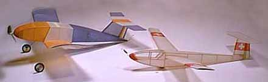
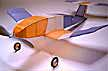
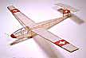

|


Named for the ratio by which they were scaled up from the original Twerp plans, these two models continue Jason's series of wonderful designs. A music wire hook on the tail of the powered model, and another on the nose of the glider allow a thread to act as a towline. These models usually climb to 40 feet or so before the towplane runs out of power. At this point, the towplane heads for the ground while the glider releases and soars on it's own. At least in theory. Actually, it works pretty well, and most flights are as planned. There is another set of trimming considerations as the glider tugs on the tail of the towplane, but Jason seems to have worked them out. If you are interested in trying your own, check out the plans.
The Twerp flies alone on a loop of .090 x 36". When towing the glider a 12" loop of 1/8" is used. Tug and Glider are coupled with an 8' towline and orbit to the right under tow, after release the glider goes left, tug goes right. I would guess that they reach an altitude of 45 feet from rog.
Cheers,
|
Copyright 1998, Thayer Syme. All rights reserved